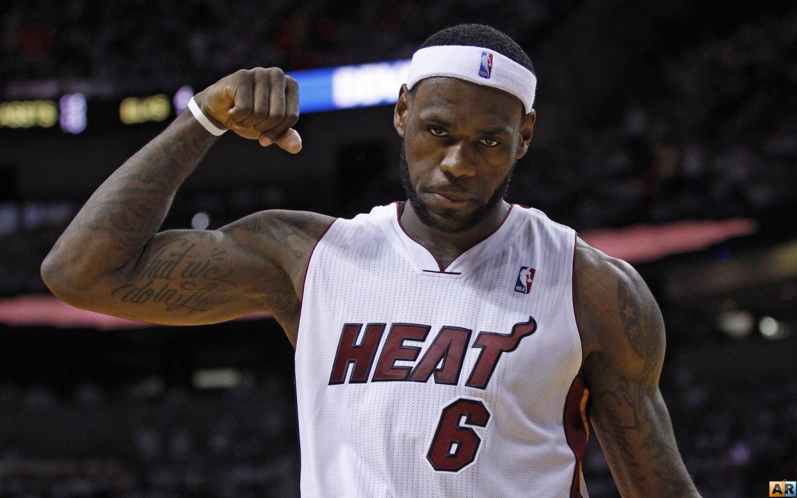

Kobe Bean Bryant (August 23, 1978 – January 26, 2020) was an American professional basketball player. A shooting guard, he spent his entire 20-year career with the Los Angeles Lakers in the NBA. Widely regarded as one of the greatest players in the history of the sport, Bryant won five NBA championships and was an 18-time All-Star, a 15-time member of the All-NBA Team, a 12-time member of the All-Defensive Team, the 2008 NBA MVP, and a two-time NBA Finals MVP. He also led the NBA in scoring twice and ranks fourth in league all-time regular season and postseason scoring. Bryant was posthumously voted into the Naismith Memorial Basketball Hall of Fame in 2020 and named to the NBA 75th Anniversary Team in 2021.

LeBron Raymone James Sr. is an American professional basketball player for the Los Angeles Lakers of the NBA. Nicknamed "King James", he is widely recognized as one of the greatest players in the history of the sport and is often compared to Michael Jordan in debates regarding the greatest basketball player of all time. He has competed in 10 NBA Finals, winning four NBA championships. He also won the inaugural NBA Cup in 2023 with the Lakers, and two Olympic gold medals as a member of the U.S. men's national team.
Michael Jeffrey Jordan (born February 17, 1963), also known by his initials MJ, is an American businessman and former professional basketball player. He played fifteen seasons in the NBA between 1984 and 2003, winning six NBA championships with the Chicago Bulls. He was integral in popularizing basketball and the NBA around the world in the 1980s and 1990s, becoming a global cultural icon. His profile on the NBA website states, "By acclamation, Michael Jordan is the greatest basketball player of all time."
Wardell Stephen Curry II is an American professional basketball player and point guard for the Golden State Warriors of the NBA. Widely regarded as the greatest shooter and one of the greatest players of all time, Curry is credited with revolutionizing the sport by inspiring teams and players to take more three-point shots. He is a four-time NBA champion, a two-time NBA MVP, an NBA Finals MVP, an NBA All-Star Game MVP, an NBA Clutch Player of the Year, and the inaugural NBA Western Conference Finals MVP. He is also a two-time NBA scoring champion, a ten-time NBA All-Star, a ten-time All-NBA selection, and has won two gold medals at the FIBA World Cup as part of the U.S. men's national team.
Paul Clifton Anthony George is an American professional basketball player for the Los Angeles Clippers of the NBA. Nicknamed "PG-13", he is a nine-time NBA All-Star and six-time member of the All-NBA Team, as well as a four-time member of the NBA All-Defensive Team.